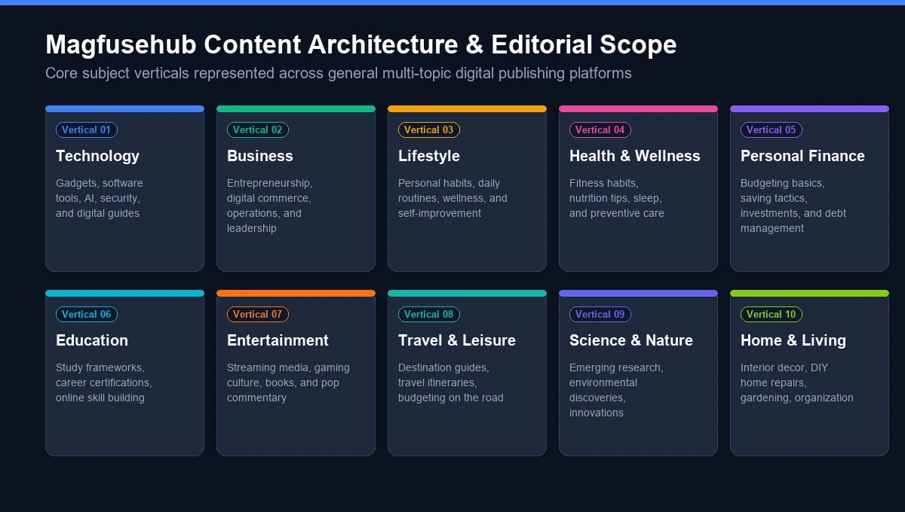
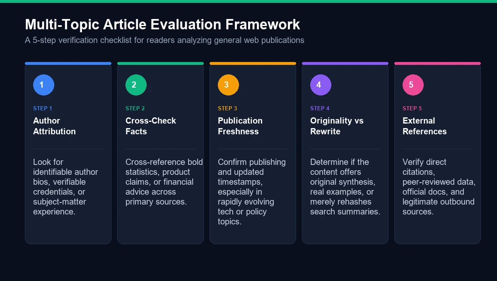

If you have recently come across magfusehub com in Google or through another website, you may be wondering what it actually is, what kind of information it publishes, and whether it is worth exploring.
Magfusehub.com is best understood as a multi-category digital publishing website. Rather than concentrating on one narrow subject, the website publishes articles covering areas such as technology, business, finance, health, travel, automotive, lifestyle, education, pets, fashion, law, and online trends.
That broad approach makes Magfusehub different from a specialist website. Someone visiting the site may find a technology article one day, a personal finance topic the next, and a travel, health, automotive, or lifestyle article after that.
But there is an important distinction to make: a website publishing information about many subjects is not automatically an expert authority on every subject. For everyday reading and topic discovery, a broad publication can be useful. For medical, financial, legal, or other high-stakes decisions, individual claims should still be checked against authoritative sources.
This guide takes a closer look at what Magfusehub com is, what it covers, how its content is organized, who may find it useful, and what readers should consider before relying on information published there.
What Is Magfusehub Com?
Magfusehub com is a multi-niche digital media and online publishing platform.
The website describes itself as a modern publication designed to provide informative and accessible content across multiple industries and interests. Its current navigation includes categories such as Technology, Business, Lifestyle, Finance, Health, Travel, and Education, while its broader editorial description also mentions automotive, fashion, law, pets, digital culture, and other subjects.
In practical terms, Magfusehub works more like a general-interest digital magazine or content publication than a software application, marketplace, or single-purpose online tool.
Its articles are intended for readers who want to discover information without restricting themselves to one particular niche.
For example, a visitor interested in technology might find articles about artificial intelligence or digital tools. Another visitor might arrive looking for information about saving money, travel, health, business, or everyday lifestyle questions.
The website's multi-topic structure is therefore one of its defining characteristics.
Magfusehub Com at a Glance
Feature | Details |
|---|---|
Website | Magfusehub.com |
Website type | Multi-category digital publication |
Main purpose | Publishing informational and editorial content |
Content model | Multiple topics and industries |
Main visible categories | Technology, Business, Lifestyle, Finance, Health, Travel, Education |
Additional topics | Automotive, Fashion, Law, Pets, Digital Culture and more |
Audience | General online readers |
Best suited for | Topic discovery, general information and introductory reading |
High-stakes information | Should be independently verified |
Publishing activity | Multiple articles across different categories |
The site's current homepage shows a mixture of recent and trending stories, including subjects involving finance, health, technology, online games, automotive topics, business, and pets.
Why Is Magfusehub Com a Multi-Niche Website?
One of the first things that stands out about Magfusehub is its breadth.
Many websites build their identity around one subject. A technology publication might focus entirely on software and gadgets. A finance publication might concentrate on markets and personal money. A travel publication may publish destination guides and travel planning content.
Magfusehub takes a different approach.
Its stated editorial direction is to bring different areas of knowledge together in one digital publishing environment. The site's About page specifically describes the goal of allowing readers to explore subjects such as technology, automotive, business, finance, health, lifestyle, fashion, travel, law, pets, and internet culture from one publication.
This model has an obvious advantage: variety.
The trade-off is that readers need to evaluate articles according to the subject. A general-interest article about a technology trend and an article discussing medical information should not automatically receive the same level of trust simply because they appear on the same website.
That is an important consideration when using any multi-topic publication.

What Content Does Magfusehub Com Publish?
The current Magfusehub ecosystem covers a surprisingly wide range of subjects.
Here are the main content areas readers are likely to encounter.
1. Technology and Digital Trends
Technology is one of the prominent areas associated with Magfusehub.
The site's editorial description includes subjects such as artificial intelligence, software, apps, gadgets, cybersecurity, internet culture, digital transformation, and emerging technologies.
Technology readers can therefore use the site to discover discussions around changing digital trends and consumer technology.
The technology category can be particularly useful for readers who want accessible explanations rather than highly technical documentation.
However, when an article involves software specifications, security recommendations, product capabilities, or rapidly changing technology, checking the information against the official documentation or manufacturer is still sensible.
2. Business and Entrepreneurship
Business is another important part of the site's content mix.
Magfusehub publishes business-oriented articles involving areas such as entrepreneurship, business development, digital commerce, leadership, and market-related subjects. Its current Business category includes articles addressing practical and commercial topics.
This makes the website potentially useful for:
- Entrepreneurs
- Small-business owners
- Digital professionals
- Freelancers
- Marketing readers
- People researching business trends
- Readers interested in online commerce
Business content is often highly dependent on context, so readers should distinguish between an educational article, an opinion piece, and professional business advice.
3. Finance and Money
Finance is another major category associated with Magfusehub.
Current and recent content includes topics around saving money, financial products, digital payments, banking, investment-related subjects, and broader economic trends.
For example, the current site features an article titled “7 Smart Ways to Build Real Savings Fast,” alongside other finance-related topics.
This type of content can be useful for general financial awareness.
However, financial decisions deserve extra caution. Readers considering investments, loans, insurance, taxes, or other significant financial decisions should verify important claims using regulators, financial institutions, qualified professionals, or primary documentation.
4. Health and Wellness
Magfusehub also publishes health-related material.
The current homepage includes health stories covering subjects such as THC gummies and GLP-1 medications.
Health information is an area where readers should be particularly careful.
A general article can help someone understand terminology or discover questions to discuss with a healthcare professional, but it should not replace individualized medical advice.
This distinction is especially important when content discusses:
- Medications
- Supplements
- Dosage
- Medical conditions
- Treatments
- Side effects
- Weight-loss drugs
- Mental health
- Diagnosis
For those subjects, primary medical sources and qualified healthcare professionals should remain the final authority.
5. Travel
Travel is included among the subjects covered by Magfusehub.
Travel publications can be useful for discovering destinations, understanding travel trends, comparing ideas, and planning trips.
But travel information can become outdated quickly. Airline rules, visa requirements, entry regulations, prices, opening hours, transportation schedules, and local policies can change.
Therefore, a travel article is best treated as a starting point rather than the final source for time-sensitive travel decisions.
6. Automotive
Automotive content is another part of the wider Magfusehub publishing model.
The website's editorial description includes vehicle technology, electric mobility, automotive trends, transportation innovation, maintenance, and industry developments.
Readers researching vehicles can use this type of content for general background information.
For specifications, recalls, warranty information, safety ratings, or maintenance requirements, however, manufacturer documentation and recognized automotive authorities remain more appropriate primary sources.
7. Lifestyle and Everyday Topics
The lifestyle category gives Magfusehub room to cover subjects that do not fit neatly into technology, business, or finance.
Lifestyle publishing can include practical everyday questions, consumer topics, habits, home-related subjects, personal interests, and broader cultural trends.
This is one of the natural benefits of a multi-niche website: readers can move between serious and casual topics without needing to visit a completely different publication.
8. Pets and Animal Care
Pet-related content is also part of the site's broader editorial scope.
The current homepage, for example, features an article about guidelines for feeding cats.
Pet owners may find this type of content useful for general education and idea generation, but veterinary advice should take priority when an animal has a medical condition, dietary problem, or unusual symptoms.
9. Fashion and Culture
Magfusehub's About page also identifies fashion, lifestyle, digital culture, and internet trends as areas within its broader publishing ecosystem.
These topics allow the site to move beyond strictly technical or business information and address changing consumer interests and online culture.
10. Law and Legal Awareness
Legal topics are another area mentioned by Magfusehub.
Legal information can be useful when it explains terminology, general concepts, or issues readers may encounter online.
But legal rules vary significantly by country, state, jurisdiction, and situation. A general online article should never automatically be treated as a substitute for advice from a qualified lawyer.
How Does Magfusehub Com Work?
Using Magfusehub is relatively straightforward.
A typical visitor can:
- Visit the website.
- Browse the homepage.
- Choose a category.
- Open an article.
- Read related or additional content.
- Use the site's navigation or search functionality to discover other topics.
The website is structured around editorial content rather than requiring users to understand a complicated software system.
This is important because several third-party articles make assumptions about features such as accounts, personalization, apps, or specialized productivity tools. Those claims should not automatically be accepted without evidence.
The current official website is most clearly presented as a digital publishing platform.
Is Magfusehub Com a Blog, Magazine, or News Website?
The simplest answer is that it is closer to a multi-niche digital publication or online magazine.
It is not limited to a single author, personal blog topic, or specialist subject.
At the same time, it should not automatically be treated as a traditional newspaper or specialist industry publication simply because it publishes current-looking articles.
The best way to understand it is:
Magfusehub.com = a broad digital content publication covering multiple categories.
That description fits the site's current structure more closely than claims that it is a software platform or productivity application.
Who Is Magfusehub Com For?
The site's broad content model means its potential audience is equally broad.
General Readers
People who simply enjoy reading about different subjects can browse multiple categories from one website.
Technology Enthusiasts
Readers interested in AI, software, digital tools, gadgets, and internet trends may find relevant articles.
Entrepreneurs and Professionals
Business and career-related articles can provide introductory information and ideas.
Students and Learners
Students can use general articles as starting points when exploring unfamiliar subjects, provided they verify important information through authoritative sources.
Travelers
Travel-related content can help generate ideas and provide initial destination information.
Lifestyle Readers
People interested in everyday topics, personal interests, pets, fashion, and lifestyle subjects can explore those sections.
What Are the Advantages of a Multi-Niche Website?
A broad publishing platform has several practical advantages.
Convenience
Readers do not need to visit a different website for every basic topic.
Topic Discovery
Browsing unrelated categories can expose readers to subjects they were not originally searching for.
Variety
A multi-niche platform can serve different interests under one brand.
Accessibility
General-interest content is often easier for beginners to approach than highly technical specialist publications.
Continuous Content Expansion
Because the platform is not tied to one niche, it can add new subjects as audience interests change.
Magfusehub itself describes its editorial vision around accessibility, topic diversity, reader engagement, responsible publishing, and continuous improvement.
What Are the Limitations of Magfusehub Com?
A balanced assessment should also consider the limitations of a broad content platform.
Broad Coverage Does Not Equal Specialist Expertise
A website can cover dozens of categories without having specialist-level expertise in every one.
This is particularly relevant to health, finance, law, and technical subjects.
Content Depth Can Vary
A multi-topic publication may contain articles with different levels of depth depending on the subject and author.
Readers should evaluate the individual article rather than judging every page equally.
Information Can Become Outdated
Technology, financial products, travel requirements, health recommendations, and online services can change quickly.
Check publication and update dates when available.
External Verification Still Matters
For important decisions, compare claims with primary sources.
This is not a criticism unique to Magfusehub. It is simply a sensible approach to consuming information on the modern web.

How to Evaluate a Magfusehub Com Article
Instead of asking only whether a website is “trusted” or “not trusted,” it is more useful to evaluate the specific article.
Consider these questions:
Who wrote the article?
Look for an identifiable author and information about their expertise where available.
When was it published?
A five-year-old article about software, medicine, finance, or travel may no longer be accurate.
Does the article provide evidence?
Important claims should ideally be supported by credible sources.
Is there a clear distinction between fact and opinion?
An editorial opinion should not be presented as established fact.
Does the subject require professional advice?
If the answer is yes, use the article for background information and consult the relevant professional or authority.
Can the important claim be verified elsewhere?
For significant decisions, cross-checking is one of the simplest ways to reduce the risk of relying on outdated or incorrect information.
Is Magfusehub Com Reliable?
There is no useful reason to answer this question with a simple “yes” or “no.”
Magfusehub.com is an active digital publication with an identifiable website structure, multiple categories, an About page, contact information, and other standard website pages. Its current contact page provides an editorial/business contact email and lists areas including editorial discussions, sponsored content, collaborations, advertising, guest publishing, technical support, and content corrections.
However, website existence and transparency pages do not automatically establish that every article is authoritative.
Reliability should be judged at the article level.
For ordinary topic discovery, Magfusehub can be a useful source to explore. For medical, legal, financial, safety-related, or other high-stakes questions, verify important information using authoritative sources.
That is a much more practical approach than labeling an entire multi-topic website as universally reliable or unreliable.
Is Magfusehub Com Safe to Visit?
There is an important difference between website safety and information reliability.
A website can be accessible without necessarily being the best source for a particular claim.
When visiting an unfamiliar website, readers should follow ordinary web-safety practices:
- Keep your browser and operating system updated.
- Avoid downloading unfamiliar files.
- Do not enter sensitive information unless there is a legitimate reason.
- Check the domain carefully before submitting credentials.
- Be cautious with unexpected pop-ups or redirects.
- Do not assume an advertisement is an endorsement.
- Verify important information independently.
These habits are useful for virtually every unfamiliar website, not only Magfusehub.
Does Magfusehub Com Have a Login or App?
Search results and third-party articles sometimes attach claims about login systems, applications, personalization features, or productivity tools to the name Magfusehub.
Those claims should be treated carefully unless they can be confirmed directly.
The current official website is clearly organized around web-based digital publishing and articles, with categories and editorial content forming the core experience.
Therefore, readers should not assume that Magfusehub is a dedicated productivity application, software product, or social network simply because an external article describes it that way.
Magfusehub Com vs. a Specialist Website
Which is better depends on what you are trying to accomplish.
Need | Magfusehub-style publication | Specialist website |
|---|---|---|
Explore different subjects | Strong fit | Limited |
Discover new topics | Strong fit | Moderate |
Beginner-friendly background | Potentially useful | Depends on site |
Deep specialist research | Not necessarily ideal | Usually better |
Medical decisions | Verify elsewhere | Prefer authoritative medical sources |
Financial decisions | Verify elsewhere | Prefer regulated/primary sources |
Legal decisions | Verify elsewhere | Prefer qualified legal sources |
General browsing | Strong fit | Depends on niche |
The key difference is breadth versus specialization.
Magfusehub's advantage is variety. A specialist publication's advantage is usually depth.
How to Use Magfusehub Com Effectively
If you decide to explore the site, a simple workflow can make the experience more useful.
Start With the Category
Instead of scrolling randomly through the homepage, choose the subject you actually care about.
Read Beyond the Headline
Headlines are designed to attract attention. The article itself contains the context.
Check Dates
Look at publication and update information, particularly for fast-changing subjects.
Follow Relevant Sources
If an article makes an important claim, locate the original source whenever possible.
Compare Information
For decisions involving money, health, law, or safety, compare information with authoritative sources.
Use Articles as a Starting Point
A general article can help you understand a topic and identify better questions to ask.
Magfusehub Com and Digital Publishing
Magfusehub is part of a larger shift in how people consume information online.
Traditional magazines often developed around a small number of editorial beats. Modern digital publications can publish across many categories because search engines, social platforms, and online audiences create demand for information about thousands of subjects.
This model gives publications flexibility.
It also creates a challenge: maintaining consistent quality across a very large editorial footprint.
That is why readers should pay attention not only to the domain name but also to author information, sourcing, publication dates, article quality, and the importance of the specific claim being made.
What Makes Magfusehub Com Different?
The strongest differentiator is not a complicated technology feature.
It is the combination of multiple content categories under one publication.
The official site presents Magfusehub as a place where readers can explore technology, business, finance, health, travel, lifestyle, automotive, pets, fashion, law, and other subjects.
That makes it more comparable to a broad online magazine than a conventional niche blog.
The approach can work particularly well for readers who like discovering information rather than arriving with one very specific research objective.
Frequently Asked Questions About Magfusehub Com
What is Magfusehub com?
Magfusehub com is a multi-category digital publishing website that publishes informational and editorial content across areas including technology, business, finance, health, travel, lifestyle, automotive, education, pets, fashion, law, and other subjects.
Is Magfusehub com a technology website?
Not exclusively. Technology is one of its content areas, but the website covers many other categories as well.
What can I find on Magfusehub com?
The website currently publishes articles covering subjects such as technology, business, finance, health, travel, education, automotive topics, lifestyle, pets, and more.
Is Magfusehub com a software application?
The current official website presents itself primarily as a digital media and publishing platform rather than a software application.
Can I use Magfusehub for research?
Yes, it can be useful for general topic discovery and introductory research. For academic, medical, financial, legal, or other high-stakes research, its information should be cross-checked with authoritative or primary sources.
Is everything published on Magfusehub com authoritative?
No website covering many different subjects should automatically be considered an expert authority on every topic. Evaluate the individual article, author, sources, date, and subject matter.
Does Magfusehub com cover finance?
Yes. Finance is one of the categories visible on the website, and current content includes topics involving saving money and other financial subjects.
Does Magfusehub com publish health content?
Yes. Health is one of the site's categories, and the current website includes health-related articles.
Who is Magfusehub com for?
The broad content model makes it suitable for general readers, learners, professionals, technology enthusiasts, entrepreneurs, travelers, and people interested in everyday lifestyle topics.
How should I evaluate a Magfusehub article?
Check the author, publication date, supporting evidence, wording, and whether the article provides primary sources. For important decisions, verify the information independently.
Final Verdict: Is Magfusehub Com Worth Exploring?
Magfusehub com is best understood as a broad digital publishing and multi-niche content platform.
Its main strength is variety. Rather than restricting itself to one subject, the website brings together technology, business, finance, health, travel, automotive, education, lifestyle, pets, fashion, law, and other areas under one digital publication.
That makes it useful for readers who enjoy discovering information across different subjects or need a starting point for understanding a topic.
At the same time, breadth should not be confused with specialist authority. A general publication can provide useful background information while still requiring readers to verify important claims elsewhere.
The smartest way to approach Magfusehub is therefore simple:
Use it to discover. Read it to learn. Verify it when the stakes are high.
That balanced approach gives readers the benefit of a broad digital publication without assuming that every article should replace specialist or primary information.
For anyone searching specifically for magfusehub com, that is perhaps the most useful takeaway: it is a multi-topic online publishing destination built around discovering information across different areas of modern digital life.
For more such useful information read our site ateliergolddruck.com